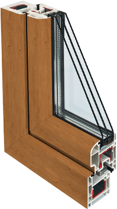

- О компании
- Цены
- Продукты и услуги
- Акции
- Контакты
Цветные пластиковые окна
Ламинируем профиль ПВХ для придания окнам цвета и фактуры дерева
Создайте выразительный интерьер с цветными окнами REHAU

- Точная визуализация натурального дерева.
- Яркие натуральные цвета в тон или в дополнение интерьера.
- Разные фактуры для ваших пластиковых окон.
Подберите цвет для своих окон:
Больше 50 вариантов цветов и фактур спрашивайте у наших замерщиков
Рассчитать со скидкой 70% или отправить заявку и получить консультациюЗачем использовать ламинацию
Чтобы придать внешнему виду окна оригинальную выразительность, специалисты применяют ламинацию - приём, при помощи которого можно декорировать своё жильё с учётом самых современных веяний дизайнерского искусства.
При помощи ламинации оконного профиля можно, например, со всей точностью воспроизвести оттенки и структуру древесины: при этом обеспечивается полная визуализация натурального дерева, точно имитирующая расположение волокон. Помимо имитации деревянных поверхностей, применяют плёнку самых разных цветов и фактур.
Как окна становятся цветными
1
Собственно, процесс ламинации профиля ПВХ состоит в процедуре ненесения на его поверхность декоративных высокопрочных плёнок с применением специального клея и ламинирующих установок.
2
Плёнку прочно соединяют с профилем. При этом внешней стороне плёнки свойственна высокая стойкость к повреждениям. В частности, цветное пластиковое окно, прошедшее через процесс ламинации, стойко переносит температурные колебания в диапазоне от -80°С до +130°С, оно исключительно стойко к солнечному излучению.
3
Пластиковые окна, прошедшие процесс ламинации профилей, имеют срок службы гораздо больший, чем не ламинированные окна. В сравнении с окнами из массива дерева, они значительно дешевле.
Отзывы о цветных пластиковых окнах
посмотреть ещё отзывыАлена,
Договор № 09.10.33512.13
Дата размещения: 13 декабря 2013 года
Поставили нам окна во всей квартире.Все очень понравилось)))компания на 5+. Все очень любезные, гибкая система скидок!!!буду советовать всем!!!Сервис был на высоте,во-прервых с поставкой получилось быстрее,во-вторых два раза приезжал замерщик Алексей,ему большое спасибо...
прочитать полностью
оставить отзыв